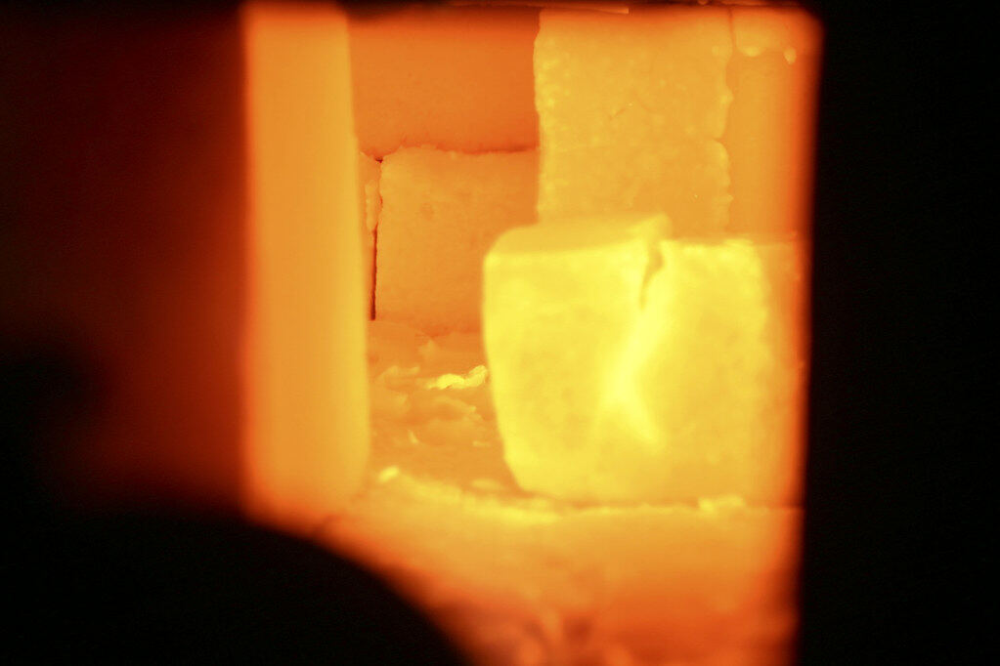
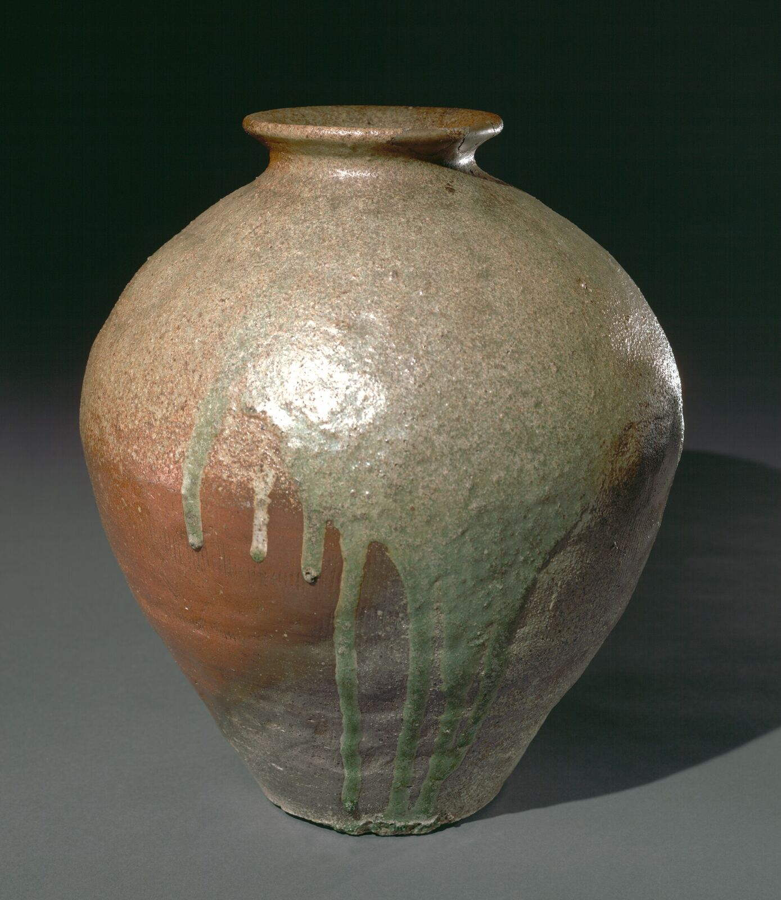
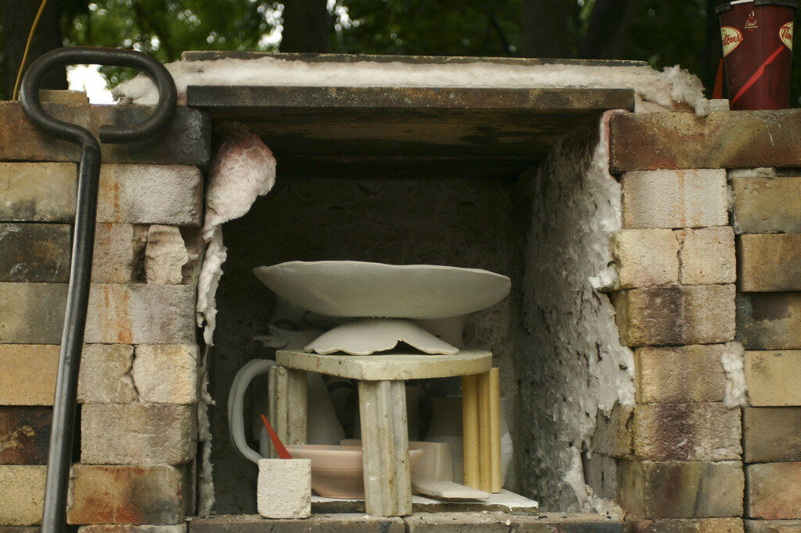

GitHub Sponsors
Co miesiąc lub jednorazowo, prosto z twojego konta GitHub. Najlepsza opcja, jeśli już obserwujesz tam Kiln.

Kiln jest darmowy i open source, i tak zostanie. Wsparcie opłaca maszyny do budowania, podpisywanie kodu i nowe narzędzia dla twórców. Napiwki w Second Life działają już teraz; pozostałe trzy ruszą z pierwszym podglądem.
Obserwuj na GitHubieCo miesiąc lub jednorazowo, prosto z twojego konta GitHub. Najlepsza opcja, jeśli już obserwujesz tam Kiln.
Jednorazowy napiwek kartą lub przez PayPal, bez zakładania konta.
Każdy wydatek jest jawny, więc widzisz dokładnie, na co idą pieniądze.
Wyślij lindeny do kilnviewer Resident in-world, tak jak napiwek dla buildera: otwórz profil i wybierz Zapłać.

